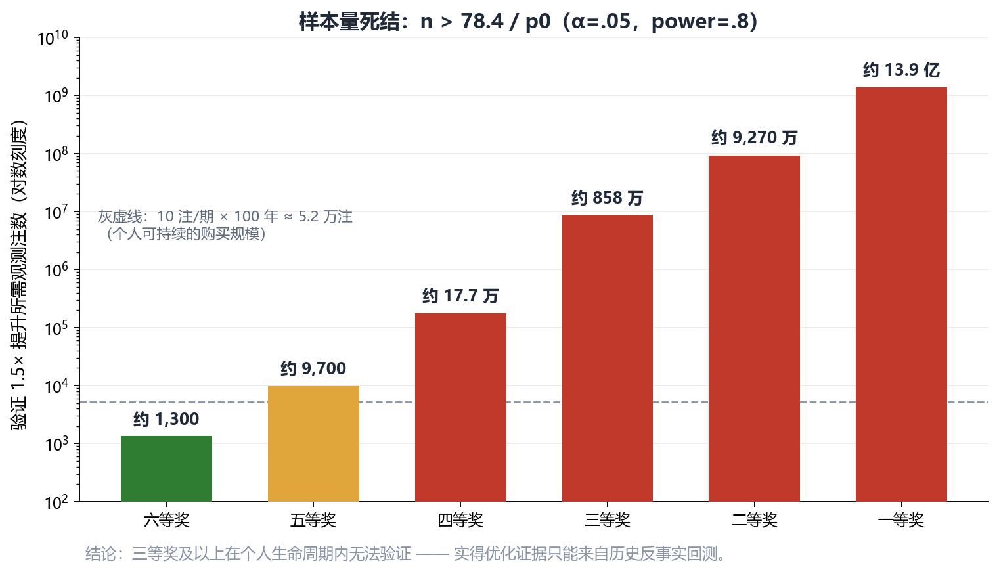
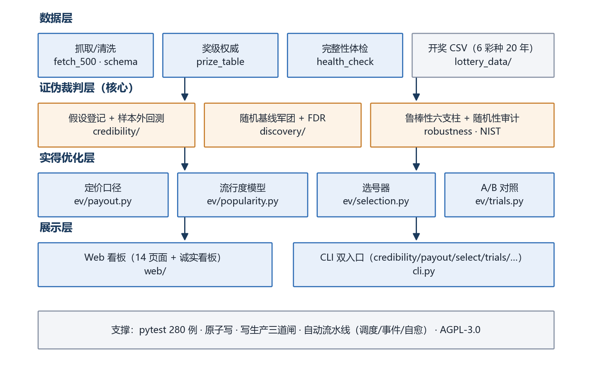
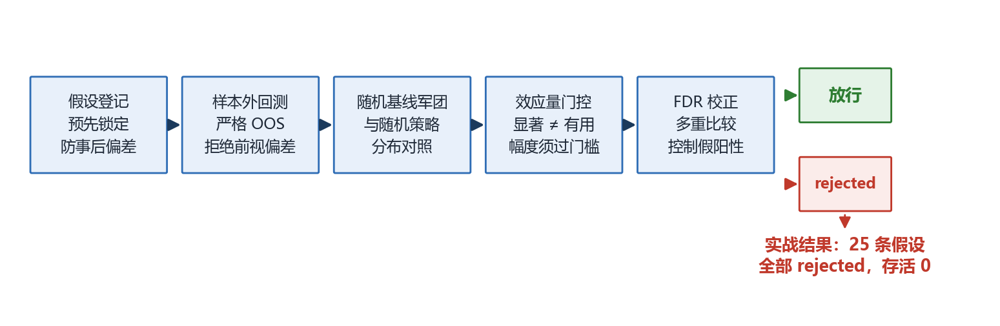
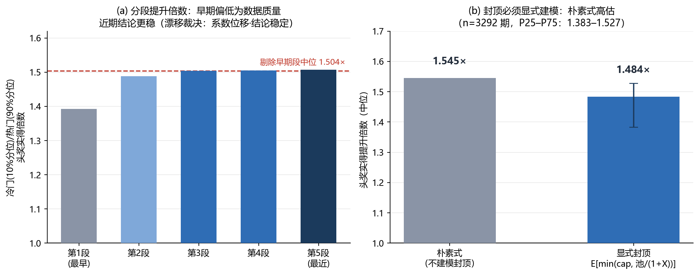

1. 摘要
本章在说什么：一页看完：项目做了什么、发现了什么、交付了什么，以及整份报告怎么组织。
工程侧，项目交付：6 彩种数据管道（抓取 / 清洗 / 体检 / 外部逐期核对）、Web 看板 14 页面 + CLI 双入口、预测-评估闭环、三路触发（调度 / 事件 / 自愈）的自动流水线、写生产三道闸、280 例单元测试，以 AGPL-3.0 开源。
本报告第 4 章给出证伪流水线的设计与"25 条假设全 rejected"的实战结果；第 5 章给出实得优化轨道的完整方法论（流行度模型 Go/No-Go、封顶显式建模的反事实回测、前瞻 A/B 对照设计）；第 6 章给出生效中的工程质量体系；第 7 章如实声明项目边界。
2. 问题与设计哲学
本章在说什么：最初的诉求怎么被拆成三个能分别下结论的小问题，以及为什么其中一个（提高中奖率）被判定为“做不到”。
2.1 需求原点与三拆解
项目最初的需求是"稳定输出高奖金中奖号码，且尽可能少注数"。这个诉求可以被拆成三个可分别裁决的子目标：
| 子目标 | 裁决 | 依据 |
|---|---|---|
| ① 提高 P(中奖) | 不可达 | 项目自身证伪：25 条 edge 假设全 rejected；距离画像观测中位 6.0 = 随机基线 6.0 |
| ② 提高 E(中奖后实得) | 可达 | 一/二等奖为平分制，冷门组合独享奖金池，实得可差数倍 |
| ③ 减少注数 | 可达 | 与 ② 相容（② 不依赖广覆盖） |
结论：框架只追 ② + ③，公开放弃 ①。这个裁决过程是项目最重要的设计决策——先证明什么不可达，再在可达范围内做工程化。
2.2 为什么 ① 不可达：样本量算术
要证明某选号策略把某奖级命中率提升到 1.5 倍，所需观测注数 n > 78.4 / p0（α=.05、power=.8、泊松两样本近似）：
| 奖级（双色球） | 理论概率 | 所需注数 | 折算（10 注/期） |
|---|---|---|---|
| 六等奖 | 1/17 | 约 1,300 | 几期（可验证） |
| 五等奖 | 1/124 | 约 9,700 | 约 6.5 年（勉强） |
| 四等奖 | 1/2255 | 约 17.7 万 | 约 118 年（不可行） |
| 三等奖 | 1/109,389 | 约 858 万 | 不可验证 |
| 二等奖 | 1/1,181,406 | 约 9,270 万 | 不可验证 |
| 一等奖 | 1/17,721,088 | 约 13.9 亿 | 不可验证 |

叠加期望值算术（每注 2 元）：固定奖期望回收约 0.49 元 + 浮动奖约 0.51 元 ≈ 1.0 元，长期期望 −50%。即使固定奖命中率提升到 3 倍：3×0.49 + 0.51 = 1.98 < 2，仍打不平。
2.3 设计哲学：先证伪，再建设
1. 不声称提高中奖概率。各奖级概率一律使用组合精确概率，模型不触碰概率侧；分数差异只能来自奖金侧——这在数学上杜绝了"声称更准"的可能。
2. 可证伪优先。每个工作包预设 Go/No-Go 门槛，不显著即公开宣布此路不通。失败的假设是合格产出——大乐透流行度模型的公开否决（§5.1）即是实录。
3. 用历史反事实回测绕开样本量死结。一等奖的未来数据永远不够，但"历史每期实际开奖号 × 当期实际一等奖注数"的反事实计算现在就能做（§5.2）。
3. 系统架构
本章在说什么：整套系统由哪四层组成、各层负责什么，为什么一台普通电脑就能跑。

| 层 | 模块 | 职责 |
|---|---|---|
| 数据层 | data/（fetch_500 · schema · prize_table · feedback）、lottery_data/ | 6 彩种开奖数据抓取、清洗、分区归一化、奖级→单注奖金权威映射、完整性体检与外部逐期核对 |
| 证伪裁判层 | credibility/（假设登记·样本外回测·基线·贝叶斯·变点·随机性审计·鲁棒性六支柱）、discovery/（随机基线军团·FDR·e-value） | 一切"有效信号"声称的唯一裁决通道 |
| 实得优化层 | ev/（payout · popularity · selection · trials · rulebook · crowd_model · rollover · kelly） | 奖金侧定价、流行度建模、实得选号、前瞻 A/B 对照 |
| 展示层 | web/（14 页面看板 + 流水线 worker）、cli.py（约 20 个子命令） | 统计 / 训练 / 预测 / 命中历史 / EV / 诚实看板；CLI 与 Web 共享同一实现 |
支撑设施：共享 JSON 原子写（tmp + fsync + os.replace）、写生产三道闸（§6.2）、三路触发的自动流水线、git bundle + 数据 zip 双备份。
4. 证伪流水线（技术核心 ①）
本章在说什么：怎么用五道工序判断“这方法真有用还是碰巧”；实战结果是 25 个假设全部不成立。

4.1 五道工序
任何策略想声称"有 edge"，必须依次通过：① 假设登记（检验前预登记，杜绝事后挑选）→ ② 严格样本外回测（滚动时间序切分，拒绝前视偏差）→ ③ 随机基线军团对照（与大量随机策略的零分布对照，大样本下用蒙特卡洛零分布替代渐近 χ²）→ ④ 效应量门控（p 显著 ≠ 有用，幅度须过门槛）→ ⑤ FDR 校正（控制多重比较的错误发现率）。
4.2 实战结果：25 条假设，存活 0
| 彩种 | 登记假设 | 结果 |
|---|---|---|
| 双色球 | 高频 / 遗漏值 / 区间均衡策略 OOS 优于随机 | 3/3 rejected |
| 大乐透 | 高频 / 遗漏值 / 区间均衡策略 OOS 优于随机 | 3/3 rejected |
| 排列3 | 高频 / 遗漏值 / 区间均衡 / 冷门号限号 EV 持续高于热门 | 4/4 rejected |
| 排列5 | 高频 / 遗漏值 / 区间均衡 / 冷门号限号 EV 持续高于热门 | 4/4 rejected |
| 福彩3D | 高频 / 遗漏值 / 区间均衡 / 冷门号限号 EV 持续高于热门 | 4/4 rejected |
| 七星彩 | 高频 / 遗漏值 / 区间均衡 / ML 策略 / 限号后冷门 EV / 浮动头奖撞号分薄 / 节假日窗口效应 | 7/7 rejected |
| 合计 | 25/25 rejected，存活 0 |
并行证据链：e-value 序贯检验对 6 彩种 22 个监控分区做"任意停时有效"的持续监控（拒绝阈 440），全部分区 e-max 远低于阈值、零告警——"开奖序列公平随机"通过持续监控，与闸门结论一致。
方法论防坑记录（实现中真实踩过并修复）：分区规则变更（七星彩第 7 位 0-9 → 0-14）后按位检验必须分段，否则规则变更断面会被误检为 p≈1e-10 的"异常"；大样本下检验零分布必须用蒙特卡洛，渐近 χ² 会失效。
4.3 这个"负结果"为什么有价值
彩票场景是对时序预测方法最严苛的对抗性测试。一个能在此场景严格给出"零信号"裁决、且能解释每一类假阳性来源（前视偏差、多重比较、渐近近似、规则变更断面）的框架，迁移到任何真实时序场景时同样能给出可信的裁决。框架的灵敏度由它抓住假阳性的能力来证明。
5. 实得优化轨道（技术核心 ②）
本章在说什么：既然中奖率动不了，钱还能从哪里多拿——平分制奖池下的“冷门效应”，以及怎么证明它是真的。
概率侧被证伪后，奖金侧仍有真实的数学结构：一/二等奖按注平分当期奖池，而人群选号并非均匀——生日号、连号、规律组合被系统性超买。买冷门组合不改变中奖概率，但中奖时独享奖池的概率更高。
5.1 组合流行度模型：双色球 GO，大乐透 NO-GO
建模：9 维组合特征（生日月/日占比、连号长度、跨度、和值偏离、奇偶比、尾数重复、半区偏斜、上期重合数）+ Poisson 回归拟合"一等奖注数 ~ f(特征) + offset(log(销量))"，样本为全部历史期。
Go/No-Go 门槛：LRT p<0.01 且时序 5 折交叉验证多数折优于零模型，两道门槛缺一不可：
| 彩种 | n | 样本内 LRT | 样本外 CV | 裁决 |
|---|---|---|---|---|
| 双色球 | 3502 | χ²=948.85, df=9, p=1.84e-198 | 5/5 折优于零模型 | GO |
| 大乐透 | 2921 | χ²=337, df=9, p=3.7e-67（显著） | 仅 1/5 折 | NO-GO：公开否决 |
这一对结果的价值在于对照：大乐透样本内极其显著，但样本外不稳健——CV 门槛成功拦截了一个假阳性。这是"样本内显著 ≠ 样本外可用"的现成实证案例。工程细节：模型参数 + 全组合打分落盘三级缓存（进程内 → 磁盘 → 现算，参数指纹 + 样本数校验自动过期），端点首载 4610ms → 187ms。
5.2 反事实回测：冷门组合实得 1.484×
方法（绕开样本量死结的关键设计）：对历史每期，取当期实际开奖号的流行度分位，对照当期实际一等奖注数与可分配池，计算"若持有冷门（10% 分位）vs 热门（90% 分位）组合，中奖时单注实得多少"。
封顶显式建模是方法论要点：实得期望 = E[min(cap, 池/(1+X))]，X~Poisson(μ)。朴素式（池×E[1/(1+X)]，不建模 1000 万封顶）得 1.545×，高估了冷门优势——奖池巨厚时几乎所有分配情形被封顶截断。

结果（双色球 n=3292 期）：冷门组合头奖实得提升倍数中位 1.484×（P25–P75：1.383–1.527）；剔除早期数据质量偏低分段后中位 1.504×。
漂移监控（三档裁决：稳定 / 系数位移·结论仍稳定 / 漂移告警）：双色球 3502 期按时间序 5 段的分段提升为 1.393 → 1.488 → 1.504 → 1.505 → 1.507×，β 前后半段联合卡方显著（χ²=153.4）但校准比 0.951（总量未漂移）→ 裁决"系数位移（结论仍稳定）"：早期段偏低源于早期销量/数据质量，近期结论反而更稳。漂移监控的性质被显式声明为维护（保证结论不过时），不会凭空提高提升倍数。
5.3 选号器与前瞻 A/B 对照
选号器：候选池（默认 2 万合法注）→ 一等奖实得降序 → 低重叠贪心。分数差异 100% 来自奖金侧（概率项对所有候选相同）。批量打分向量化后 37.4s → 1.71s。大乐透因 NO-GO 跳过打分直接随机并如实标注——拒绝输出伪排序。
前瞻 A/B 对照（持续运行中）：每期同时生成 A=模型选号 / B=同候选池随机对照（同低重叠约束），唯一差异 = 是否按实得排序。期号口径严格分离：记录「期号」= 下注目标期，另存「打分基准期」——两者混用即构成虚假对照（docstring + 单测锁定）。
| 终点 | 可完成性 | 时间尺度 |
|---|---|---|
| 中奖率等价性（主终点，安慰剂检验） | 可完成 | 60 期 ≈ 5 个月（检出 20% 差异）；229 期 ≈ 1.5 年（10%） |
| 实得奖金差异（次终点） | 不可完成 | 头奖期望等待约 1136 年 |
主终点的价值是等价性检验：理论预期 A/B 中奖率完全相等（概率与号码无关的契约），若出现显著差异 = 实现存在 bug。统计工具：配对符号检验 + 序贯 e-value（任意停时有效）+ TOST 等价检验。
5.4 天花板声明
本轨道交付的是"中奖时实得更高"，不是"更常中"。单注期望仍为负（约 −1.0 → −0.6）；能翻正的唯一窗口是派奖活动 / 异常奖池，而那需要广覆盖，与"少注数"本质冲突。此声明在系统所有对外输出（看板 / CLI / 报告）中原样呈现，不做模糊处理。
6. 工程与可靠性
本章在说什么：数据凭什么可信、改代码凭什么不闯祸、系统凭什么一直能跑。
6.1 数据质量体系
体检总入口（scripts/health_check.py，只读）：一次性跑 6 类检查（完整性 / 记录审计 / pending 新鲜度 / 关键字段 / 流水线快照 / 写保护自检）→ 结构化报告。最近一次结论：真实待处理问题 0 项。外部核对：开奖数据与独立源逐期核对；唯一已知数据缺口 = 排列5 两期（2004 年，数据源本身缺失），已在体检中显式豁免登记。修复工具（scripts/repair_records.py）：默认 dry-run，--apply 前自动备份；历史修复过三类真实问题（分区名迁移静默清零、非法票误判奖级、命中/奖级不符）。
6.2 写生产三道闸
预测 / 训练闭环会写生产数据，项目为此建立三层防护（起因是一次测试运行把生产 100 组待评估预测覆盖成 3 组）：① pytest 进程内拒写生产 feedback 目录（环境变量显式放行才可写）；② 预测接口支持 record_pending=False 显式只算不落库；③ 训练闭环遇同期已有生产预测时跳过写入。
6.3 测试与运维
pytest 280 例全量通过，覆盖奖金口径（固定 / 浮动 / 分薄 / 封顶）、批量与单注口径对齐、期号口径、写保护回归、NO-GO 诚实路径等。改代码后经看门狗热重启（健康检查复用旧进程的坑已修），共享 JSON 一律原子写。备份：git bundle 全量 + 数据 zip，改数据前强制留原始副本。
6.4 开源与许可
项目以 AGPL-3.0 许可开源（仓库含完整 LICENSE 与 README 许可章节）。开奖数据与运行数据不随代码许可分发。
7. 局限与展望
本章在说什么：哪些结论我明确不敢说、哪些还要等时间才能说。
已知局限（诚实声明）：
1. 概率侧提升的验证在三等奖以上数学上不可行（样本量死结），该结论不可绕过，只能绕开（反事实回测）。
2. 实得奖金层面的前瞻验证期望等待 1136 年——实得证据只能来自历史反事实回测，其外推假设是"人群选号行为结构延续"。
3. 流行度模型仅双色球通过 OOS 门槛；大乐透的否决说明该结构不可跨彩种想当然迁移。
4. A/B 前瞻对照刚开始积累（目标 60 期），目前只证明"框架能跑"，不构成任何结论。
5. 数据来源为第三方聚合站（500.com），已做外部核对但源头错漏仍可能传导。
展望：A/B 对照跑满 60 期后输出首份等价性裁决；漂移监控按季度重拟合（流水线自动），维持 1.484× 结论的时效性；证伪流水线抽象为通用时序信号检验组件（脱离彩票场景复用）。